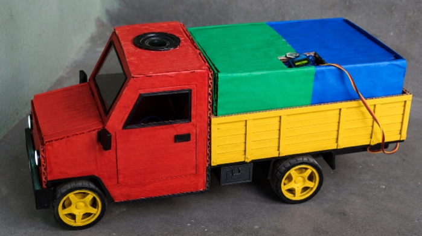

📸 Project Gallery
Upload your project photos below by replacing these images.


Student of Sanskriti Srijan School, Gorakhpur, Uttar Pradesh. Passionate about Science, Arduino, Electronics and Innovation.
Explore My Innovation
Hello! My name is Dheeraj Sahani. I am a Class 9 student of Sanskriti Srijan School, Gorakhpur, Uttar Pradesh. I love Science, Robotics, Arduino Programming, Electronics and Innovation. My dream is to become a Scientist and create technologies that help people and make India cleaner, smarter and environmentally friendly.
"Separate Waste Today, Build a Cleaner India Tomorrow." My mission is to inspire people to separate wet and dry waste. Proper waste segregation reduces pollution, improves recycling and protects nature. Every citizen can make India clean.
The Smart Wet & Dry Waste Segregator is an innovative waste management project created to encourage people to separate wet and dry waste. This system uses sensors to help classify waste and also supports a smart garbage collection vehicle equipped with a speaker that plays an announcement or awareness message during waste collection. The main purpose of this project is to increase public awareness about waste segregation, improve recycling, and contribute to a cleaner environment.
Helps separate wet and dry waste efficiently.
Uses sensors for intelligent waste detection.
Garbage vehicle plays awareness announcements.
Supports a cleaner and greener India.
Upload your project photos below by replacing these images.
✔ Become a Scientist
✔ Develop Smart Technologies
✔ Inspire Young Innovators
✔ Make India Cleaner through Innovation
Dheeraj Sahani
Young Innovator
Class 9 Student
Sanskriti Srijan School
Gorakhpur, Uttar Pradesh, India